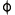

New Phyrexia¶
- Karn Liberated

+4: Wskazany gracz wygania kartę ze swojej ręki.
–3: Wygnaj wskazany byt.
–14: Zacznij grę od nowa, pozostawiając na wygnaniu wszystkie byty nie będące Aurami wygnane przy użyciu niniejszej karty. Następnie umieść owe karty na polu bitwy pod twoim władaniem.
- Apostle's Blessing

(
 może być opłacone przez
może być opłacone przez  lub 2 życia.)
lub 2 życia.)Wskazany artefakt lub stwór pod twoim władaniem do końca tury zyskuje ochronę od artefaktów lub wybranego przez ciebie koloru.
- Auriok Survivors

Kiedy ten byt wejdzie na pole bitwy, możesz przywrócić wskazaną kartę Wyposażenia z twojego cmentarza na pole bitwy. Jeśli tak zrobisz, możesz ją dołączyć do tego stwora.
- Blade Splicer

Kiedy ten byt wejdzie na pole bitwy, stwórz żeton bezkolorowego artefaktowego stwora Phyrexiański Golem 3/3.
Golemy pod twoim władaniem mają pierwszy cios.
- Cathedral Membrane

(
może być opłacone przez lub 2 życia.)Obronność
Kiedy ten stwór umrze w trakcie potyczki, zadaje 6 obrażeń każdemu stworowi, którego blokował w tej potyczce.
- Chancellor of the Annex

Możesz ujawnić tę kartę z twojej początkowej ręki. Jeśli tak zrobisz, kiedy każdy z przeciwników rzuci swój pierwszy czar w grze, skontruj ów czar, chyba że gracz rzucający go zapłaci
 .
.Latanie
Ilekroć przeciwnik rzuca czar, skontruj go, chyba że ów gracz zapłaci
.- Dispatch

Przekręć wskazanego stwora.
Metalurgia — Jeśli władasz co najmniej trzema artefaktami, wygnaj owego stwora.
- Due Respect

W tej turze byty wchodzą na pole bitwy przekręcone.
Dobierz kartę.
- Elesh Norn, Grand Cenobite

Czujność
Inne stwory pod twoim władaniem dostają +2/+2.
Stwory pod władaniem twoich przeciwników dostają -2/-2.
- Exclusion Ritual

Odlew — Kiedy ta karta wejdzie na pole bitwy, wygnaj wskazany byt nie będący lądem.
Gracze nie mogą rzucać czarów o tej samej nazwie, co wygnana karta.
- Forced Worship

Zaurocz stwora
Zauroczony stwór nie może atakować.
 : Przywróć ten urok to ręki jego właściciela.
: Przywróć ten urok to ręki jego właściciela.- Inquisitor Exarch

Kiedy ta karta wejdzie na pole bitwy, wybierz jedną —
Zyskaj 2 życia.
Wskazany przeciwnik traci 2 życia.
- Lost Leonin

Infekcja (Ten stwór zadaje obrażenia stworom w postaci znaczników -1/-1, a graczom w postaci znaczników zatrucia.)

- Marrow Shards

(
może być opłacone przez lub 2 życia.)Ten czar zadaje po 1 obrażeniu każdemu atakującemu stworowi.
- Master Splicer

Kiedy ten byt wejdzie na pole bitwy, stwórz żeton bezkolorowego artefaktowego stwora Phyrexiański Golem 3/3.
Golemy pod twoim władaniem dostają +1/+1.
- Norn's Annex

(
może być opłacone przez lub 2 życia.)Stwory nie mogą zaatakować ciebie lub wędrowców pod twoim władaniem, chyba że ich władca zapłaci
za każdego z owych stworów.- Phyrexian Unlife

Nie przegrywasz gry za posiadanie 0 lub mniej żyć.
Dopóki masz 0 lub mniej życia, wszystkie obrażenia tobie zadawane są traktowane jakby ich źródło miało infekcję (Otrzymujesz obrażenia w postaci znaczników zatrucia.)
- Porcelain Legionnaire

(
może być opłacone przez lub 2 życia.)Pierwszy cios
- Puresteel Paladin

Ilekroć Wyposażenie wchodzi na pole bitwy pod twoim władaniem, możesz dobrać kartę.
Metalurgia — Wyposażenia pod twoim władaniem mają „Wyposaż
 ” o ile władasz przynajmniej trzema artefaktami.
” o ile władasz przynajmniej trzema artefaktami.- Remember the Fallen

Wybierz jedną lub obie —
Przywróć wskazaną kartę stwora z twojego cmentarza do twojej ręki.
Przywróć wskazaną kartę artefaktu z twojego cmentarza do twojej ręki.
- Sensor Splicer

Kiedy ten byt wejdzie na pole bitwy, stwórz żeton bezkolorowego artefaktowego stwora Phyrexiański Golem 3/3.
Golemy pod twoim władaniem mają czujność.
- Shattered Angel

Latanie
Ilekroć ląd wejdzie na pole bitwy pod władaniem przeciwnika, możesz zyskać 3 życia.
- Shriek Raptor

Latanie
Infekcja (Ten stwór zadaje obrażenia stworom w postaci znaczników -1/-1, a graczom w postaci znaczników zatrucia.)
- Suture Priest

Ilekroć inny stwór wejdzie na pole bitwy pod twoim władaniem, możesz zyskać 1 życie.
Ilekroć stwór wejdzie na pole bitwy pod władaniem przeciwnika, możesz sprawić, że ów gracz straci 1 życie.
- War Report

Zyskaj życia równe sumie liczby stworów na polu bitwy oraz liczby artefaktów na polu bitwy.
- Argent Mutation

Wskazany byt do końca tury staje się dodatkowo artefaktem oprócz swoich innych typów.
Dobierz kartę.
- Arm with Aether

Do końca tury stwory pod twoim władaniem zyskują „Ilekroć ten stwór zada przeciwnikowi obrażenia, możesz przywrócić wskazanego stwora pod władaniem owego gracza do ręki właściciela.”
- Blighted Agent

Infekcja (Ten stwór zadaje obrażenia stworom w postaci znaczników -1/-1, a graczom w postaci znaczników zatrucia.)
Ten stwór nie może być blokowany.
- Chained Throatseeker

Infekcja (Ten stwór zadaje obrażenia stworom w postaci znaczników -1/-1, a graczom w postaci znaczników zatrucia.)
Ten stwór nie może atakować, chyba że broniący się gracz jest zatruty.
- Chancellor of the Spires

Możesz ujawnić tę kartę z twojej początkowej ręki. Jeśli tak zrobisz, na początku pierwszego kroku utrzymania, każdy przeciwnik mieli siedem kart.
Latanie
Kiedy ten byt wejdzie na pole bitwy, możesz rzucić wskazaną kartę sztuczki lub obrzędu z cmentarza przeciwnika bez płacenia jej kosztu many.
- Corrupted Resolve

Skontruj wskazany czar jeśli jego władca jest zatruty.
- Deceiver Exarch

Błysk (Możesz rzucić ten czar jako sztuczkę.)
Kiedy ten byt wejdzie na pole bitwy, wybierz jedną —
Odkręć wskazany byt pod twoim władaniem.
Przekręć wskazany byt pod władaniem przeciwnika.
- Defensive Stance

Zaurocz stwora
Zauroczony stwór dostaje -1/+1.
- Gitaxian Probe

(
 można zapłacić
można zapłacić  lub 2 życiami.)
lub 2 życiami.)Spójrz na rękę wskazanego gracza.
Dobierz kartę.
- Impaler Shrike

Latanie
Ilekroć ten stwór zada graczowi obrażenia bojowe, możesz go poświęcić. Jeśli tak zrobisz, dobierz trzy karty.
- Jin-Gitaxias, Core Augur

Błysk
Na początku twojego kroku końcowego, dobierz siedem kart.
Limit kart na ręce każdego z przeciwników jest mniejszy o siedem.
- Mental Misstep

(
można zapłacić lub 2 życiami.)Skontruj wskazany czar o skrócie many 1.
- Mindculling

Dobierz dwie karty i wskazany przeciwnik odrzuca dwie karty.
- Numbing Dose

Zaurocz artefakt lub stwora
Zauroczony byt nie odkręca się w kroku odkręcania swojego władcy.
Na początku kroku utrzymania władcy zauroczonego bytu, ów gracz traci 1 życie.
- Phyrexian Ingester

Odlew — Kiedy ten byt wejdzie na pole bitwy, możesz wygnać wskazanego nieżetonowego stwora.
Ten stwór dostaje +X/+Y, gdzie X jest siłą wygnanej karty, a Y jej wytrzymałością.
- Phyrexian Metamorph

(
można zapłacić lub 2 życiami.)Możesz zdecydować, że ten byt wejdzie na pole bitwy jako kopia dowolnego artefaktu lub stwora na polu bitwy, ale jest dodatkowo artefaktem oprócz swoich innych typów.
- Psychic Barrier

Skontruj wskazany czar stwora. Jego władca traci 1 życie.
- Psychic Surgery

Ilekroć przeciwnik przetasuje swoją bibliotekę, możesz spojrzeć na dwie wierzchnie karty owej biblioteki. Możesz wygnać jedną z owych kart. Następnie umieść pozostałe dowolnie na wierzchu owej biblioteki.
- Spined Thopter

(
można zapłacić lub 2 życiami.)Latanie
- Spire Monitor

Błysk (Możesz rzucić ten czar jako sztuczkę.)
Latanie
- Tezzeret's Gambit

(
można zapłacić lub 2 życiami.)Dobierz dwie karty, po czym rozpleń. (Wybierz dowolną liczbę bytów i/lub graczy, po czym daj im kolejny znacznik każdego z już obecnych tam rodzajów.)
- Vapor Snag

Przywróć wskazanego stwora do ręki właściciela. Jego władca traci 1 życie.
- Viral Drake

Latanie
Infekcja (Ten stwór zadaje obrażenia stworom w postaci znaczników -1/-1, a graczom w postaci znaczników zatrucia.)
 : Rozpleń. (Wybierz dowolną liczbę bytów i/lub graczy, po czym daj im kolejny znacznik każdego z już obecnych tam rodzajów.)
: Rozpleń. (Wybierz dowolną liczbę bytów i/lub graczy, po czym daj im kolejny znacznik każdego z już obecnych tam rodzajów.)- Wing Splicer

Kiedy ten byt wejdzie na pole bitwy, stwórz żeton bezkolorowego artefaktowego stwora Phyrexiański Golem 3/3.
Golemy pod twoim władaniem mają latanie.
- Xenograft

Przy wejściu tego bytu na pole bitwy wybierz typ stwora.
Każdy stwór pod twoim władaniem jest dodatkowo wybranego typu oprócz swoich innych typów.
- Blind Zealot

Zastraszenie (Ten stwór nie może być blokowany, chyba że przez stwory artefaktowe lub współdzielące z nim kolor.)
Ilekroć ten stwór zada graczowi obrażenia bojowe, możesz go poświęcić. Jeśli tak zrobisz, zniszcz wskazanego stwora pod władaniem owego gracza.
- Caress of Phyrexia

Wskazany gracz dobiera trzy karty, traci 3 życia i dostaje trzy znaczniki zatrucia.
- Chancellor of the Dross

Możesz ujawnić tę kartę z twojej startowej ręki. Jeśli tak zrobisz, na początku pierwszego kroku utrzymania, każdy przeciwnik traci po 3 życia, po czym ty zyskaj życia równe życiom straconym w ten sposób.
Latanie, więź życia
- Dementia Bat

Latanie

 , poświęć tego stwora: Wskazany gracz odrzuca dwie karty.
, poświęć tego stwora: Wskazany gracz odrzuca dwie karty.- Despise

Wskazany przeciwnik ujawnia swoją rękę. Wybierz z niej kartę stwora lub wędrowca. Ów gracz odrzuca ową kartę.
- Dismember

(
 można opłacić lub 2 życiami.)
można opłacić lub 2 życiami.)Wskazany stwór do końca tury dostaje -5/-5.
- Enslave

Zaurocz stwora
Masz władanie nad zauroczonym stworem.
Na początku twojego kroku utrzymania, zauroczony stwór zadaje swojemu władcy 1 obrażenie.
- Entomber Exarch

Kiedy ten byt wejdzie na pole bitwy, wybierz jedną —
Przywróć wskazaną kartę stwora z twojego cmentarza do twojej ręki.
Wskazany przeciwnik ujawnia swoją rękę. Wybierz z niej kartę nie będącą stworem. Ów gracz odrzuca ową kartę.
- Evil Presence

Zaurocz ląd
Zauroczony ląd jest Bagnem.
- Geth's Verdict

Wskazany gracz poświęca stwora i traci 1 życie.
- Glistening Oil

Zaurocz stwora
Zauroczony stwór ma infekcję.
Na początku twojego kroku utrzymania, umieść znacznik -1/-1 na zauroczonym stworze.
Kiedy ta karta trafi do cmentarza z pola bitwy, przywróć ją do ręki właściciela.
- Grim Affliction

Umieść znacznik -1/-1 na wskazanym stworze, po czym rozpleń. (Wybierz dowolną liczbę bytów i/lub graczy, po czym daj im kolejny znacznik każdego z już obecnych tam rodzajów.)
- Ichor Explosion

Jako dodatkowy koszt rzucenia tego czaru — poświęć stwora.
Wszystkie stwory dostają do końca tury -X/-X, gdzie X jest siłą poświęconego stwora.
- Life's Finale

Zniszcz wszystkie stwory, po czym wyszukaj w bibliotece wskazanego przeciwnika co najwyżej trzy karty stworów i umieść je w jego cmentarzy. Następnie ów gracz tasuje.
- Mortis Dogs

Ilekroć ten stwór zaatakuje, dostaje on do końca tury +2/+0.
Kiedy ten stwór umrze, wskazany gracz traci życia równe jego sile.
- Parasitic Implant

Zaurocz stwora
Na początku twojego kroku utrzymania, władca zauroczonego stwora poświęca go, a ty stwórz żeton bezkolorowego artefaktowego stwora Phyrexiański Myr 1/1.
- Phyrexian Obliterator

Tratowanie
Ilekroć jakieś źródło zada obrażenia temu stworowi, władca owego źródła poświęca tyle samo bytów.
- Pith Driller

(
można opłacić lub 2 życiami.)Kiedy ten byt wejdzie na pole bitwy, umieść znacznik -1/-1 na wskazanym stworze.
- Postmortem Lunge

(
można opłacić lub 2 życiami.)Przywróć wskazaną kartę stwora o skrócie many X z twojego cmentarza na pole bitwy. Zyskuje on pośpiech. Wygnaj go na początku najbliższego kroku końcowego.
- Praetor's Grasp

Wyszukaj kartę w bibliotece wskazanego przeciwnika i wygnaj ją zakrytą. Ów gracz tasuje. Możesz patrzeć na ową kartę i zagrać ją przez czas jej wygnania.
- Reaper of Sheoldred

Infekcja (Ten stwór zadaje obrażenia stworom w postaci znaczników -1/-1, a graczom w postaci znaczników zatrucia.)
Ilekroć źródło zada temu stworowi obrażenia, władca owego źródła dostaje znacznik zatrucia.
- Sheoldred, Whispering One

Podbój bagien (Ten stwór nie może być blokowany o ile broniący się gracz włada Bagnem.)
Na początku twojego kroku utrzymania, przywróć wskazaną kartę stwora z twojego cmentarza na pole bitwy.
Na początku kroku utrzymania każdego z przeciwników, ów gracz poświęca stwora.
- Surgical Extraction

(
można opłacić lub 2 życiami.)Wybierz wskazaną kartę w cmentarzu inną niż bazowy ląd. Wyszukaj w cmentarzu, ręce i bibliotece jej właściciela dowolną liczbę kart o tej samej nazwie i wygnaj je. Następnie ów gracz tasuje.
- Toxic Nim

Infekcja (Ten stwór zadaje obrażenia stworom w postaci znaczników -1/-1, a graczom w postaci znaczników zatrucia.)
: Zregeneruj tego stwora.- Vault Skirge

(
można opłacić lub 2 życiami.)Latanie
Więź życia (Obrażania zadane przez tego stwora powodują, że zyskujesz tyle samo żyć.)
- Whispering Specter

Latanie
Infekcja (Ten stwór zadaje obrażenia stworom w postaci znaczników -1/-1, a graczom w postaci znaczników zatrucia.)
Ilekroć ten stwór zada graczowi obrażenia bojowe, możesz go poświęcić. Jeśli tak zrobisz, ów gracz odrzuca tyle kart, ile ma znaczników zatrucia.
- Act of Aggression

(
 można opłacić z użyciem
można opłacić z użyciem  albo 2 żyć.)
albo 2 żyć.)Zyskaj do końca tury władanie nad wskazanym stworem pod władaniem przeciwnika. Odkręć owego stwora. Do końca tury zyskuje on pośpiech.
- Artillerize

Jako dodatkowy koszt rzucenia tego czaru — poświęć artefakt lub stwora.
Ten czar zadaje wskazanemu celowi 5 obrażeń.
- Bludgeon Brawl

Każdy niestworowy artefakt nie będący Wyposażeniem jest Wyposażeniem mającym „wyposaż
 ” oraz „Wyposażony stwór dostaje +X/+0”, gdzie X jest skrótem many owego artefaktu.
” oraz „Wyposażony stwór dostaje +X/+0”, gdzie X jest skrótem many owego artefaktu.- Chancellor of the Forge

Możesz ujawnić tę kartę z twojej początkowej ręki. Jeśli tak zrobisz, na początku pierwszego kroku utrzymania, stwórz żeton czerwonego stwora Phyrexiański Goblin 1/1 z pośpiechem.
Kiedy ten byt wejdzie na pole bitwy, stwórz X żetonów czerwonego stwora Phyrexiański Goblin 1/1 z pośpiechem, gdzie X jest liczbą stworów pod twoim władaniem.
- Fallen Ferromancer

Infekcja (Ten stwór zadaje obrażenia stworom w postaci znaczników -1/-1, a graczom w postaci znaczników zatrucia.)
,  : Ten stwór zadaje wskazanemu celowi 1 obrażenie.
: Ten stwór zadaje wskazanemu celowi 1 obrażenie.

- Furnace Scamp

Ilekroć ten stwór zada graczowi obrażenia bojowe, możesz go poświęcić. Jeśli tak zrobisz, zadaje on owemu graczowi 3 obrażenia.
- Geosurge

Weź
. Wydaj tę manę tylko na rzucenie czarów artefaktów lub stworów.- Gut Shot

(
można opłacić z użyciem albo 2 żyć.)Ten czar zadaje wskazanemu celowi 1 obrażenie.
- Invader Parasite

Odlew — Kiedy ten byt wejdzie na pole bitwy, wygnaj wskazany ląd.
Ilekroć na pole bitwy pod władaniem przeciwnika wejdzie ląd o tej samej nazwie co wygnana karta, niniejszy stwór zadaje owemu graczowi 2 obrażenia.
- Moltensteel Dragon

(
można opłacić z użyciem albo 2 żyć.)Latanie
: Ten stwór do końca tury dostaje +1/+0.- Ogre Menial

Infekcja (Ten stwór zadaje obrażenia stworom w postaci znaczników -1/-1, a graczom w postaci znaczników zatrucia.)
: Ten stwór do końca tury dostaje +1/+0.- Priest of Urabrask

Kiedy ten byt wejdzie na pole bitwy, weź
.- Rage Extractor

(
można opłacić z użyciem albo 2 żyć.)Ilekroć rzucisz czar mający  w swoim koszcie many, ten stwór zadaje wskazanemu celowi obrażenia równe skrótowi many owego czaru.
- Razor Swine

Pierwszy cios
Infekcja (Ten stwór zadaje obrażenia stworom w postaci znaczników -1/-1, a graczom w postaci znaczników zatrucia.)
- Ruthless Invasion

(
można opłacić z użyciem albo 2 żyć.)Nieartefaktowe stwory nie mogą blokować w tej turze.
- Scrapyard Salvo

Ten czar zadaje wskazanemu graczowi lub wędrowcowi obrażenia równe liczbie kart artefaktów w twoim cmentarzu.
- Slag Fiend

Siła i wytrzymałość tej karty są obie równe liczbie kart artefaktów we wszystkich cmentarzach.
- Slash Panther

(
można opłacić z użyciem albo 2 żyć.)Pośpiech
- Tormentor Exarch

Kiedy ten byt wejdzie na pole bitwy, wybierz jedną —
Wskazany stwór do końca tury dostaje +2/+0.
Wskazany stwór do końca tury dostaje -0/-2.
- Urabrask the Hidden

Stwory pod twoim władaniem mają pośpiech.
Stwory pod władaniem twoich przeciwników wchodzą przekręcone na pole bitwy.
- Victorious Destruction

Zniszcz wskazany artefakt lub ląd. Jego władca traci 1 życie.
- Volt Charge

Ten czar zadaje wskazanemu celowi 3 obrażenia. Rozpleń. (Wybierz dowolną liczbę bytów i/lub graczy, po czym daj im kolejny znacznik każdego z już obecnych tam rodzajów.)
- Vulshok Refugee

Ochrona przed czerwonym
- Whipflare

Ten czar zadaje każdemu nieartefaktowemu stworowi po 2 obrażenia.
- Beast Within

Zniszcz wskazany byt. Jego władca tworzy żeton zielonego stwora Bestia 3/3.
- Birthing Pod

(
 można opłacić
można opłacić  lub 2 życiami.), , poświęć stwora: Wyszukaj w twojej bibliotece kartę stwora o skrócie many większym o 1 od skróconego kosztu many poświęconego stwora, umieść ową kartę na polu bitwy, po czym przetasuj. Aktywuj tylko jako obrzęd.
lub 2 życiami.), , poświęć stwora: Wyszukaj w twojej bibliotece kartę stwora o skrócie many większym o 1 od skróconego kosztu many poświęconego stwora, umieść ową kartę na polu bitwy, po czym przetasuj. Aktywuj tylko jako obrzęd.- Brutalizer Exarch

Kiedy ten byt wejdzie na pole bitwy, wybierz jedną —
Wyszukaj w twojej bibliotece kartę stwora, ujawnij ją, po czym przetasuj i umieść ową kartę na wierzchu.
Umieść wskazany niestworowy byt na spodzie biblioteki właściciela.
- Chancellor of the Tangle

Możesz ujawnić tę kartę z twojej startowej ręki. Jeśli tak zrobisz, na początku twojej pierwszej fazy głównej, weź
.Czujność, zasięg
- Corrosive Gale

(
można opłacić lub 2 życiami.)Ten czar zadaje każdemu stworowi mającemu latanie po X obrażeń.
- Death-Hood Cobra

- : Ten stwór do końca tury zyskuje zasięg.: Ten stwór do końca tury zyskuje dotyk śmierci.
- Fresh Meat

Stwórz tyle żetonów zielonego stwora Bestia 3/3, ile stworów zostało w tej turze umieszczonych z pola bitwy w twoim cmentarzu.
- Glissa's Scorn

Zniszcz wskazany artefakt. Jego władca traci 1 życie.
- Glistener Elf

Infekcja (Ten stwór zadaje obrażenia stworom w postaci znaczników -1/-1, a graczom w postaci znaczników zatrucia.)
- Greenhilt Trainee

- : Wskazany stwór do końca tury dostaje +4/+4. Możesz aktywować tylko jeśli ten stwór ma siłę 4 lub większą.
- Leeching Bite

Wskazany stwór do końca tury dostaje +1/+1. Inny wskazany stwór do końca tury dostaje -1/-1.
- Maul Splicer

Kiedy ten byt wejdzie na pole bitwy, stwórz dwa żetony bezkolorowego artefaktowego stwora Phyrexiański Golem 3/3.
Golemy pod twoim władaniem mają tratowanie.
- Melira, Sylvok Outcast

Nie możesz dostać znaczników zatrucia.
Nie można umieszczać znaczników -1/-1 na stworach pod twoim władaniem.
Stwory pod władaniem twoich przeciwników tracą infekcję.
- Mutagenic Growth

(
można opłacić lub 2 życiami.)Wskazany stwór do końca tury dostaje +2/+2.
- Mycosynth Fiend

Ten stwór dostaje +1/+1 za każdy znacznik zatrucia u twoich przeciwników.
- Noxious Revival

(
można opłacić lub 2 życiami.)Umieść wskazaną kartę z cmentarza na wierzchu biblioteki właściciela.
- Phyrexian Swarmlord

Infekcja (Ten stwór zadaje obrażenia stworom w postaci znaczników -1/-1, a graczom w postaci znaczników zatrucia.)
Na początku twojego utrzymania, stwórz tyle żetonów zielonego stwora Phyrexiański Owad 1/1 z infekcją, ile łącznie żetonów zatrucia mają twoi przeciwnicy.

- Spinebiter

Infekcja (Ten stwór zadaje obrażenia stworom w postaci znaczników -1/-1, a graczom w postaci znaczników zatrucia.)
Możesz sprawić, że ten stwór przypisze swoje obrażenia bojowe tak, jakby nie został zablokowany.
- Thundering Tanadon

(
można opłacić lub 2 życiami.)Tratowanie
- Triumph of the Hordes

Do końca tury stwory pod twoim władaniem dostają +1/+1 oraz tratowanie i infekcję. (Stwory z infekcją zadają obrażenia stworom w formie znaczników -1/-1, a graczom w formie znaczników zatrucia.)
- Viridian Betrayers

Ten stwór ma infekcję o ile przeciwnik jest zatruty. (Zadaje obrażenia stworom w postaci znaczników -1/-1, a graczom w postaci znaczników zatrucia.)
- Viridian Harvest

Zaurocz artefakt
Kiedy zauroczony artefakt trafi do cmentarza, zyskaj 6 żyć.
- Vital Splicer

Kiedy ten byt wejdzie na pole bitwy, stwórz żeton bezkolorowego artefaktowego stwora Phyrexiański Golem 3/3.
: Zregeneruj wskazanego Golema pod twoim władaniem.- Vorinclex, Voice of Hunger

Tratowanie
Ilekroć przekręcisz ląd biorąc manę, weź jedną manę w jednym z typów wyprodukowanych przez ów ląd.
Ilekroć przeciwnik przekręci ląd biorąc manę, ów ląd nie odkręci się w najbliższym kroku odkręcania jego władcy.
- Jor Kadeen, the Prevailer

Pierwszy cios
Metalurgia — Stwory pod twoim władaniem dostają +3/+0 o ile władasz co najmniej trzema artefaktami.
- Alloy Myr

- : Weź jedną manę dowolnego koloru.
- Batterskull

Żywy oręż (Kiedy to Wyposażenie wejdzie na pole bitwy, stwórz żeton czarnego stwora Phyrexiański Bakcyl 0/0 i dołącz to do niego.)
Wyposażony stwór dostaje +4/+4 i ma czujność oraz więź życia.
: Przywróć ten artefakt do ręki właściciela.Wyposaż

- Blinding Souleater

- , : Przekręć wskazanego stwora. ( można opłacić używając lub 2 żyć.)
- Caged Sun

Przy wejściu tego bytu na pole bitwy, wybierz kolor.
Stwory wybranego koloru pod twoim władaniem dostają +1/+1.
Ilekroć zdolność lądu sprawia, że bierzesz jedną lub więcej many wybranego koloru, weź jedną dodatkową manę owego koloru.
- Conversion Chamber

- , : Wygnaj wskazaną kartę artefaktu z cmentarza. Umieść znacznik ładunku na tym artefakcie., , usuń znacznik ładunku z tego artefaktu: Stwórz żeton bezkolorwego artefaktowego stwora Phyrexiański Golem 3/3.
- Darksteel Relic

Niezniszczalność (Efekty mówiące „zniszcz” nie niszczą tego artefaktu.)
- Etched Monstrosity

Ten stwór wchodzi na pole bitwy mając pięć znaczników -1/-1.
, usuń pięć znaczników -1/-1 z tego stwora: Wskazany gracz dobiera trzy karty.- Gremlin Mine

- , , poświęć ten artefakt: Zadaje on wskazanemu artefaktowemu stworowi 4 obrażenia., , poświęć ten artefakt: Usuń co najwyżej cztery znaczniki ładunku ze wskazanego niestworowego artefaktu.
- Hex Parasite

- : Usuń co najwyżej X znaczników ze wskazanego bytu. Za każdy znacznik usunięty w ten sposób, ten stwór do końca tury dostaje +1/+0. ( można opłacić używając lub 2 żyć.)
- Hovermyr

Latanie, czujność
- Immolating Souleater

- : Ten stwór do końca tury dostaje +1/+0. ( można opłacić używając lub 2 żyć.)
- Insatiable Souleater

- : Ten stwór do końca tury zyskuje tratowanie. ( można opłacić używając lub 2 życia.)
- Isolation Cell

Ilekroć przeciwnik rzuci czar stwora, ów gracz traci 2 życia, chyba że zapłaci
.- Kiln Walker

Ilekroć ten stwór zaatakuje, dostaje on do końca tury +3/+0.
- Lashwrithe

Żywy oręż (Kiedy to Wyposażenie wejdzie na pole bitwy, stwórz żeton czarnego stwora Phyrexiański Bakcyl 0/0 i dołącz to do niego.)
Wyposażony stwór dostaje +1/+1 za każde Bagno pod twoim władaniem.
Wyposaż
( można opłacić używając lub 2 żyć.)- Mindcrank

Ilekroć przeciwnik traci życie, ów gracz mieli tyle samo kart. (Obrażenia powodują utratę życia.)
- Mycosynth Wellspring

Kiedy ten byt wejdzie na pole bitwy lub trafi do cmentarza z pola bitwy, możesz wyszukać w twojej bibliotece kartę bazowego lądu, ujawnij ją, umieść w twojej ręce, po czym przetasuj.
- Myr Superion

Do rzucenia tego czaru wydaj wyłącznie manę wziętą ze stworów.
- Necropouncer

Żywy oręż (Kiedy to Wyposażenie wejdzie na pole bitwy, stwórz żeton czarnego stwora Phyrexiański Bakcyl 0/0 i dołącz to do niego.)
Wyposażony stwór dostaje +3/+1 i ma pośpiech.
Wyposaż
- Omen Machine

Gracze nie mogą dobierać kart.
Na początku kroku dobierania każdego z graczy, ów gracz wygania wierzchnią kartę swojej biblioteki. Jeśli to karta lądu, ów gracz umieszcza ją na polu bitwy. W przeciwnym razie rzuca ją bez płacenia kosztu many, jeśli może.
- Pestilent Souleater

- : Ten stwór do końca tury zyskuje infekcję. ( można opłacić używając lub 2 życia. Stwór z infekcją zadaje stworom obrażenia w formie znaczników -1/-1, a graczom w formie znaczników zatrucia.)

- Pristine Talisman

- : Weź
 . Zyskaj 1 życie.
. Zyskaj 1 życie. - Shrine of Boundless Growth

Na początku twojego kroku utrzymania lub ilekroć rzucisz zielony czar, umieść znacznik ładunku na tym artefakcie.
, poświęć ten artefakt: Weź za każdy znacznik ładunku na tym artefakcie.- Shrine of Burning Rage

Na początku twojego kroku utrzymania lub ilekroć rzucisz czerwony czar, umieść znacznik ładunku na tym artefakcie.
, , poświęć ten artefakt: Zadaje on wskazanemu celowi obrażenia równe liczbie znaczników ładunku na nim.- Shrine of Limitless Power

Na początku twojego kroku utrzymania lub ilekroć rzucisz czarny czar, umieść znacznik ładunku na tym artefakcie.
, , poświęć ten artefakt: Wskazany gracz odrzuca kartę za każdy znacznik ładunku na tym artefakcie.- Shrine of Loyal Legions

Na początku twojego kroku utrzymania lub ilekroć rzucisz biały czar, umieść znacznik ładunku na tym artefakcie.
, , poświęć ten artefakt: Stwórz żeton bezkolorowego artefaktowego stwora Phyrexiański Myr 1/1 za każdy znacznik ładunku na tym artefakcie.- Shrine of Piercing Vision

Na początku twojego kroku utrzymania lub ilekroć rzucisz niebieski czar, umieść znacznik ładunku na tym artefakcie.
, poświęć ten artefakt: Spójrz na X wierzchnich kart twojej biblioteki, gdzie X jest liczbą znaczników ładunku na tym artefakcie. Umieść jedną z owych kart w twojej ręce, a pozostałe dowolnie na spodzie twojej biblioteki.- Sickleslicer

Żywy oręż (Kiedy to Wyposażenie wejdzie na pole bitwy, stwórz żeton czarnego stwora Phyrexiański Bakcyl 0/0 i dołącz to do niego.)
Wyposażony stwór dostaje +2/+2.
Wyposaż
- Soul Conduit

 , : Dwóch wskazanych graczy wymienia się życiami.
, : Dwóch wskazanych graczy wymienia się życiami.- Spellskite

- : Zmień wskazanie wskazanego czaru lub zdolności na tego stwora. ( można zapłacić lub 2 życiami.)
- Surge Node

Ten artefakt wchodzi na pole bitwy mając sześć znaczników ładunku.
, , usuń znacznik ładunku z tego artefaktu: Umieść znacznik ładunku na wskazanym artefakcie.- Sword of War and Peace

Wyposażony stwór dostaje +2/+2 i ma ochronę przed czerwonym i białym.
Ilekroć wyposażony stwór zada graczowi obrażenia bojowe, ten artefakt zadaje owemu graczowi obrażenia równe liczbie kart w jego ręce, a ty zyskaj po 1 życiu za każdą kartę w twojej ręce.
Wyposaż
- Torpor Orb

Stwory wchodzące na pole bitwy nie powodują wyzwalania zdolności.
- Trespassing Souleater

- : Ten stwór nie może być blokowany w tej turze. ( można opłacić używając lub 2 żyć.)
- Unwinding Clock

Odkręć wszystkie artefakty pod twoim władaniem podczas kroku odkręcania każdego innego gracza.
- Phyrexia's Core

- : Weź ., , poświęć artefakt: Zyskaj 1 życie.
- Plains

(
: Weź .)- Island

(
: Weź .)- Swamp

(
: Weź .)- Mountain

(
: Weź .)- Forest

(
: Weź .)